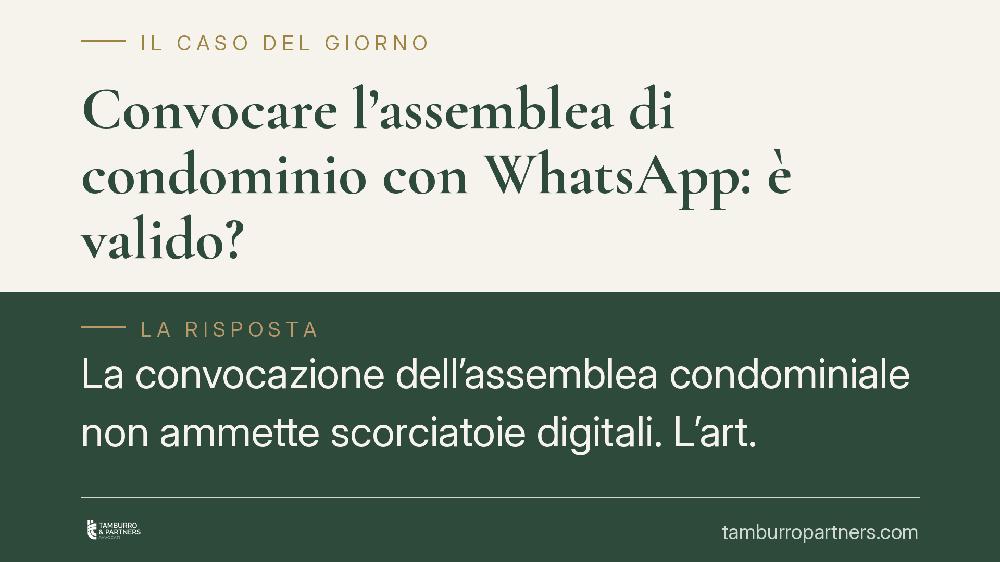

Convocare l'assemblea di condominio con WhatsApp: è valido?
La convocazione dell'assemblea condominiale non ammette scorciatoie digitali. L'art. 66 delle disposizioni di attuazione del codice civile indica forme precise per l'avviso, e la messaggistica istantanea non rientra tra queste. Una convocazione irrituale può rendere annullabile la delibera. Vediamo perché il canale conta quanto il contenuto, e cosa devono verificare amministratore e condòmini.

Il caso
La questione è ricorrente: l'amministratore invia l'avviso di convocazione dell'assemblea tramite un gruppo WhatsApp del condominio, o con un messaggio singolo ai condòmini. È comodo, immediato, tracciabile. Ma è valido?
La risposta prevalente in giurisprudenza di merito è negativa. Un orientamento consolidato ritiene che la convocazione effettuata con mezzi diversi da quelli previsti dalla legge costituisca un vizio idoneo a rendere annullabile la delibera adottata. Il problema non è il messaggio in sé, ma il canale utilizzato.
Inquadramento normativo
La disciplina è contenuta nell'art. 66 delle disposizioni di attuazione del codice civile. Il terzo comma stabilisce che l'avviso di convocazione deve essere comunicato a mezzo di posta raccomandata, posta elettronica certificata, fax o tramite consegna a mano. Sono queste le modalità indicate dal legislatore.
La ratio è chiara: garantire certezza sull'invio, sulla data e sull'effettiva ricezione da parte di ciascun avente diritto. La raccomandata e la PEC producono una prova documentale opponibile; il fax e la consegna a mano lasciano traccia verificabile. WhatsApp, per contro, non offre analoghe garanzie sotto il profilo probatorio: la doppia spunta blu attesta la lettura solo in astratto, dipende dalle impostazioni dell'utente e non certifica l'identità del destinatario né il contenuto in modo opponibile in giudizio.
Il quinto comma dell'art. 66 disp. att. prevede inoltre che l'avviso pervenga almeno cinque giorni prima della data fissata per l'adunanza in prima convocazione. Anche il rispetto del termine, quindi, presuppone un canale che consenta di dimostrare quando la comunicazione è pervenuta.
Va ricordato che l'art. 72 disp. att. cod. civ. rende inderogabili, da parte del regolamento condominiale, alcune norme delle disposizioni di attuazione, tra cui proprio l'art. 66. In altri termini: il regolamento non può introdurre modalità di convocazione più "leggere" di quelle di legge. Questo profilo va tenuto distinto dalla questione, separata, dell'eventuale accordo unanime tra i condòmini.
Nullità o annullabilità?
La distinzione è decisiva. L'art. 1137 cod. civ. disciplina l'impugnazione delle delibere assembleari. Secondo l'orientamento della giurisprudenza, i vizi relativi alla convocazione — come l'omesso o irrituale avviso — rientrano tra le cause di annullabilità, non di nullità.
Le conseguenze pratiche sono rilevanti:
- la delibera annullabile è efficace fino a quando non viene annullata dal giudice;
- l'impugnazione va proposta entro trenta giorni, che decorrono dalla delibera per i dissenzienti o astenuti presenti, e dalla comunicazione del verbale per gli assenti;
- decorso il termine senza impugnazione, il vizio non è più opponibile.
Secondo un'interpretazione diffusa, inoltre, il vizio di convocazione può considerarsi sanato quando il condòmino non regolarmente avvisato partecipa comunque all'assemblea senza sollevare eccezioni. Si tratta di un orientamento interpretativo: la sua applicazione va valutata caso per caso.
Implicazioni pratiche
Per l'amministratore, il messaggio è netto: la comodità del canale digitale informale non copre il rischio di un'impugnazione. Una delibera annullata comporta la necessità di riconvocare l'assemblea, con costi, tempi e possibili contestazioni di responsabilità.
Per il condòmino, la convocazione irrituale può essere un motivo di impugnazione, ma solo entro il termine di trenta giorni e a condizione di non aver sanato il vizio con la propria partecipazione priva di riserve.
WhatsApp può restare uno strumento utile per comunicazioni di cortesia o solleciti informali, ma non può sostituire l'avviso formale di convocazione.
Cosa fare in concreto
- Utilizza solo i canali dell'art. 66 disp. att.: raccomandata, PEC, fax o consegna a mano con firma per ricevuta. Evita la messaggistica istantanea come mezzo di convocazione.
- Conserva le prove di invio e ricezione: ricevute di ritorno, ricevute PEC, rapporti di trasmissione. Servono a dimostrare il rispetto del termine dei cinque giorni.
- Verifica gli indirizzi PEC dei condòmini e raccogli il consenso all'uso di quel canale, aggiornando l'anagrafe condominiale.
- Se sei condòmino e ravvisi un vizio, valuta l'impugnazione entro trenta giorni: consigliamo di non lasciar decorrere il termine e di documentare la modalità con cui hai ricevuto l'avviso.
- Non fare affidamento sulla sanatoria: la partecipazione senza riserve può sanare il vizio, ma è un'eventualità da non dare per scontata.
Disclaimer
Contributo informativo a cura di Tamburro & Partners - Avv. Giuseppe Tamburro. Non costituisce parere legale.
Ogni condominio ha una storia a sé.
Se gestisci un'amministrazione e vuoi un confronto su una specifica questione condominiale, scrivi allo studio. Ti rispondiamo entro un giorno lavorativo.